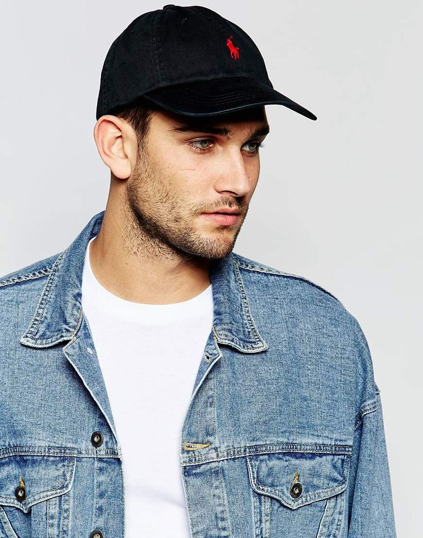

Menu
Fashion For WazzU
Home
Our Mission
Girls: Essentials/Tips
Guys: Essentials/Tips
Video
Connect with us
Menu
Guys: Essentials and Tips
Essential 1. A good pair of jeans. [click for more]
Essential 2. Scarves. [click for more]
Essential 3. Flannels. [click for more]

Essential 4. Hats. [click for more]
Essential 5. Sweatshirts. [click for more]
Essential 6. Denim Jacket. [click for more]
Essential 7. Dress Shirt. [click for more]
Essential 8. Watches. [click for more]
Essential 9. Dress Shoes. [click for more]
Essential 10. Joggers. [click for more]
Essential 11. Backpack. [click for more]
Essential 12. Casual Shoes. [click for more]
Essential 13. Leather Jacket. [click for more]
Essential 14. Sunglasses. [click for more]
Essential 15. Bomber Jacket. [click for more]
Essential 16. T-Shirt. [click for more]
Essential 17. Belts. [click for more]
Essential 18. Zip-Up Jacket. [click for more]
Essential 19. Shorts. [click for more]
Essential 20. Beanie. [click for more]


{kind=link}
{kind=link}
{kind=link}
{kind=link}
{kind=link}
{kind=link}
{kind=link}
{kind=link}
{kind=link}
{kind=link}
{kind=link}
{kind=link}
{kind=link}
{kind=link}